OED Documentation
Line Graphic
Version V1.0.0
Documentation overview
User documentation
Information
Graphing
Meters/Groups
Other Features
Admin documentation
Documentation versions for this page
Overview
A line graphic shows each meter and group as a unique line showing usage across time. The following figure shows a line graphic of two meters of the floors of the "Great Dorm" and the group "Great Dorm Electric" which contains both of these floors. (information on example data) Thus, the sum of the values of the two meter lines at any given time equals the group line value. The hover is shown whenever the curser is over a line and is accurate to 6 significant figures. It is the middle of the date/time range of represented by this point. In the figure below, the time in the hover is 12:00:00 PM which is the middle of the day (noon) since the point spans an entire day. It is the same as the x-axis value. Each line represents power usage at that time for the indicated meter/group, e.g., kW for electricity with the graphing unit of kWh (see y-axis unit). To get this graphic, one clicks the "Line" choice (highlighted with a blue box) from the "Graph type" dropdown menu. 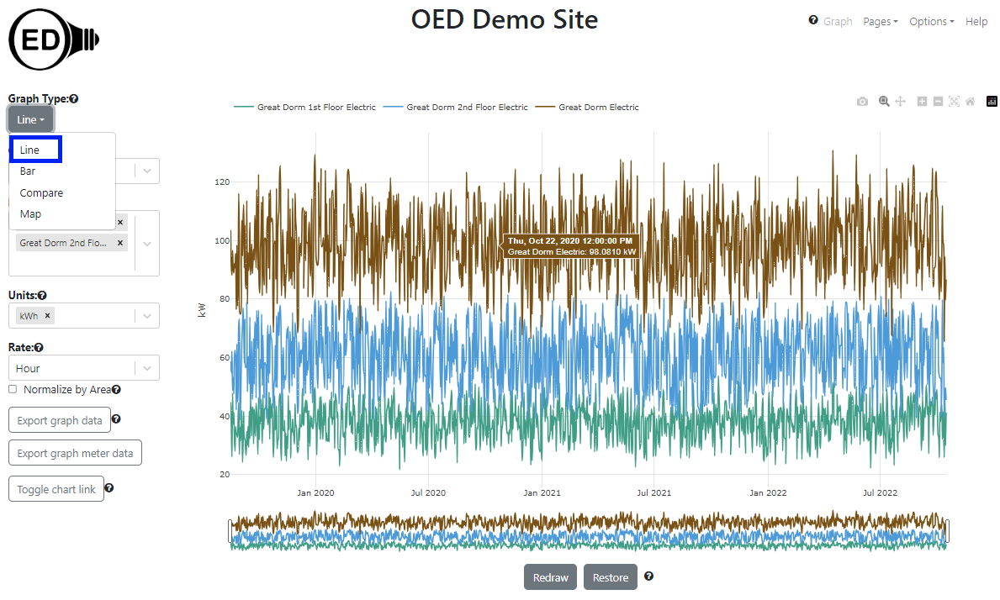
A line graphic can show an arbitrary choice and number of meters and groups. As described below, one can control the time frame (dates shown) on the line graphic.
Usage
One selects the meters and/or groups to graph in the usual way. OED will display each meter or group as a uniquely colored line. One can select the units, area normalization and chart link as usual. The rate used to display the data can also be selected when it is appropriate.
If the values of one or more meters (or groups) are substantially less than another meter (or group) then the values for these meters will be very close to the x-axis and difficult to see. This is seen in the following figure where "Library Electric" has substantially smaller values than "Great Dorm Electric". 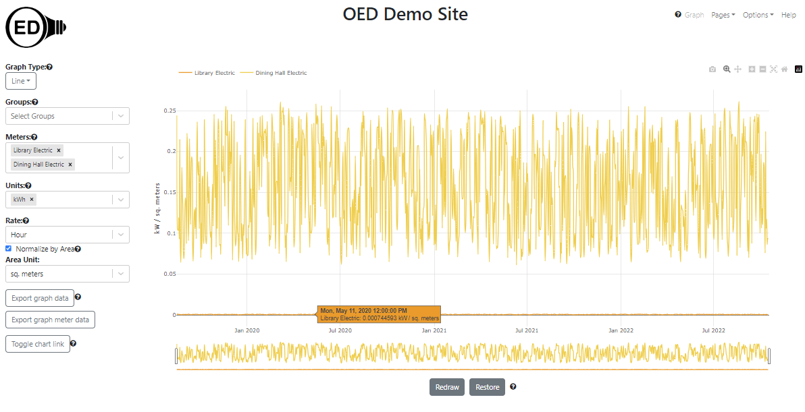
One can more readily see these values by removing the values for the meters or groups with larger values. One way to do this is to remove a meter or group from graphing by clicking the "X" next to its name in the list (details on the meters/groups graphing documentation pages). This works but is slower since OED must recalculate the values via the server (see details below). It also means one won't see these meters/groups in other graphics since they were removed. A nice solution is to click on the name of the meter/group at the top of the line graphic. In the next figure, "Great Dorm Electric" was clicked (highlighted with blue box) and the graph quickly redrew to what is shown with the y-axis scale re-calibrated for the remaining meters. The meter not being shown is in shadow font. One can click to remove as many lines as desired. 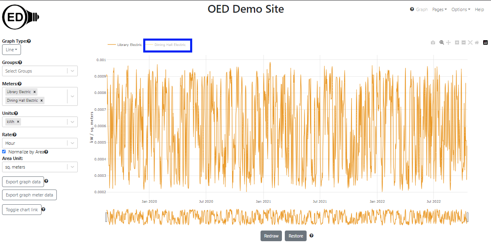
One can click on a meter/group in shadow font to get it to quickly reappear on the line graphic. Note that going to another graphic will reset the meters/groups shown so any hidden meters will show again.
Scrolling and zooming
Initially, OED shows the line graphic across all time that is available. Sometimes one wants to look at a smaller time range. One can achieve this by zooming in the time (x) axis. This is done by clicking and dragging the rectangles with black border below the x-axis (highlighted with blue boxes in the figure below). As one slides the black rectangle, the parts of the x-axis (time) that is removed from the graph is show by a gray filled rectangle (highlighted in light blue boxes but also goes to center of the rectangle but not highlighted since then hard to see other blue box). The white area between the gray rectangles is the time being shown. In the figure below the original time was reduced to July through December, 2020. 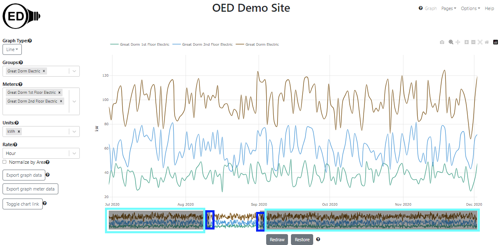
Once one is zoomed in so gray areas are shown for the removed time, one can click within these areas to modify the time range shown but the behavior is a little more complex and likely to take time to learn to use.
If only part of the time is shown, then one can scroll to see the other times. The total time displayed remains the same but the times included change as one scrolls. One do this by clicking and dragging in the white area below the x-axis that shows the time being displayed (highlighted with blue box in the next figure). The next figure shows the process of dragging where the time displayed has now changed to January through June, 2021. 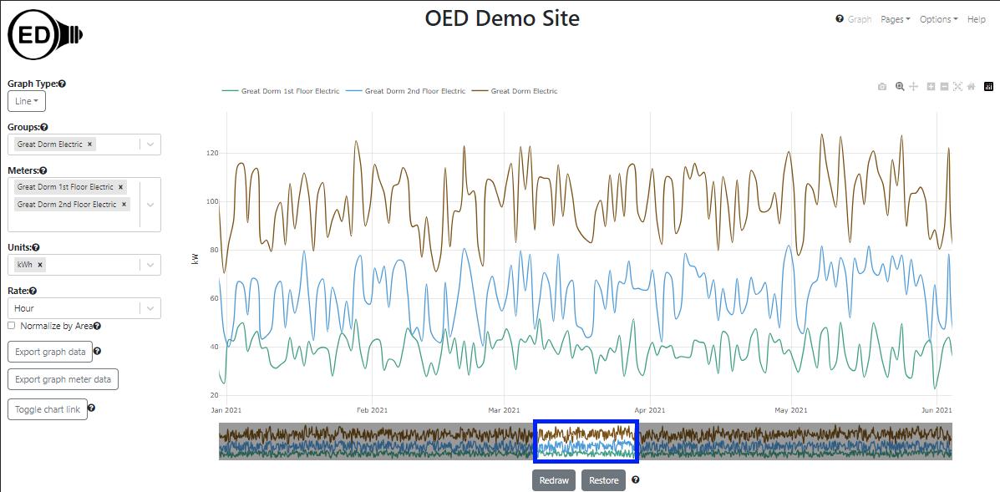
If one zooms in significantly so the time range is much smaller than the original time range, the graph can become jagged due to having too few points. Also, one might want to return the graphic to its original, full time range. Both of these are discussed in the next section on the "Redraw" and "Restore" buttons.
If one goes to another page then the zoomed values will be lost unless one redraws as described in the next section.
Redraw and Restore buttons
The next figure shows the result of zooming in even farther so a limited time range of about one week is shown. It only shows one of the meters to simplify seeing the effect. 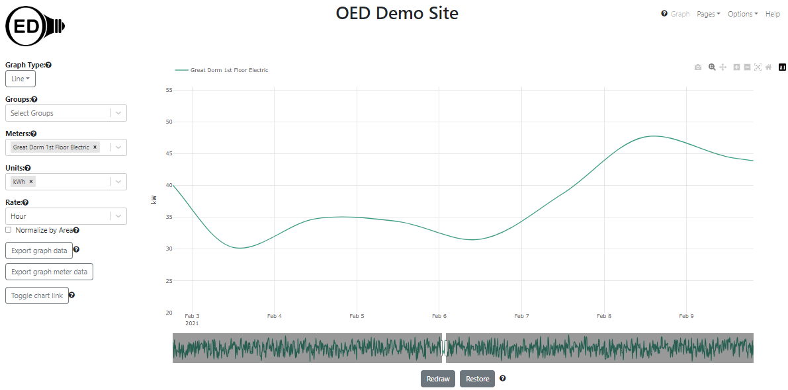
As one can see, the line has become vague because the time points are far apart (still one day). This happens due to the limited number of points available from the original time frame graphic of several years. (see below for the details of why). If one wants to see this time range with more points then click the "Redraw" button (highlighted with a blue box) as shown in the figure below. One can now see that many more points are present. In this case it is using the original meter data which is spaced 20 minutes apart. 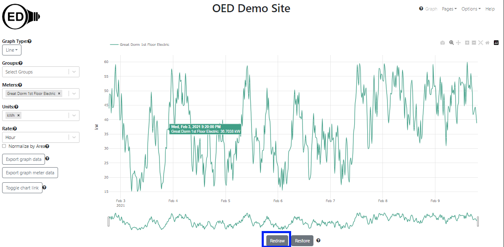
Note that the time range redrawn on a line graphic is also used for most other graphics (but not comparison). If you see a blank graphic on a different graphic page then one should check to see if the time range on the line graphic is too small to see values on the other graphics. For example, if you zoom into a time range that is less than the width of one bar interval then the bar graphic page will be blank.
Because OED uses a rate on the line graphic (as discussed above), The reading's value does not dramatically change when the time frame is redrawn unless the averaging was for meter data that varied greatly. Note that once one does this, the time range is reset so one cannot zoom outward nor scroll to times outside the new range but one can zoom in farther. If one wants to see other time ranges, one can click the "Restore" button (highlighted with a blue box in the next figure) and the graph will return to its original view with the time range including all meters. The result of doing this is shown in the next figure. Notice that it matches the "Great Dorm 1st Floor Electric" line in the original figure at the top of this page when the different y-xis scales are taken into account. 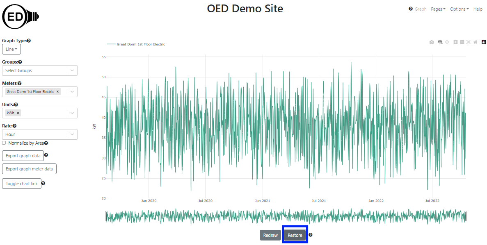
As noted, when one clicks "Redraw" the data, OED recalculates the number of points to display. Part of that process is deciding the frequency, i.e., the time between points, that is shown. OED tries to return the highest quality data it can without returning too many graphing points. This means that it will first try to return meter data then hourly and finally daily data. At the current time, OED limits the number of graphic points for any individual line or meter to 1440 or less. OED has three qualities of graphic points that it uses:
- Original Meter Data. If the range of time means that the number of meter points is small enough then OED will use the original meter data. This means that no averaging has been done and the graph shows what was received from the meter. This can be valuable if one wants to see exactly what the meter showed. As shown above, reducing the number of days on a line graphic can make this happen if the meter has a lot of reading. Note that groups cannot graph at the meter data level because meters with data at different times of readings do not align.
- Hourly. Each point represents one hour of data. OED automatically averages multiple readings within the hour and will properly account for missing meter points within the hour when there are still some points. When one hovers over a line in this case the time shown will be a half hour such as 9:30:00 AM since the half hour is the midpoint of the time averaged.
- Daily. Each point represents one day of data. OED automatically averages multiple readings within the day and will properly account for missing meter points within the day when there are still some points. When one hovers over a line in this case the time shown will be 12:00:00 PM because that is the midpoint of the points averaged.
Note that each meter or group that is in a line graphic independently decides about the quality of its line graphic. This is done to give the maximum quality possible while not returning too many points in any line. Thus, it is possible to get meters on a line graphic that have different qualities. Since groups will not use meter data then they will definitely differ from meters that are displayed at this quality.
OED will not return a quality of graphic readings that is higher than what a meter is supposed to supply data. For example, if a meter supplies data every four hours then the quality of data in a line graphic will not be hourly but could be every 4 hours or daily. As another example, if a meter only has data every 7 days then it would only graph that data every 7 days. Note that because the meter supplied data less frequently it is more likely that OED will graph the original meter data which is the highest quality data it has available.
To give an idea of when OED uses each quality of graphic points, suppose one has a meter that supplies data every 15 minutes. If the graphic time range is 15 days or less then OED will graph in original meter data. If the graphic time range is more than 15 days but 60 days or less then OED will graph hourly points. If it is more than 60 days then OED will graph daily points. OED uses the information the site provides for the frequency that a meter supplies data to make the determinations and does not take into account if the meter supplies data at a different rate.
Details
Y-axis label
See graphic units used for an explanation of the y-axis units and why they can vary from the graphing unit selected.
Exporting graph data
one can export the data represented on a line graphic. one can use the line graph to get the time range, meters/groups, unit and rate one wants before exporting. See the export documentation page for further information.
Plotly graph controls
As shown in the next figure, the Plotly (the underlying graphic package) graphical controls (highlighted by a blue box) are available for usage. The most useful might be the camera that allows one to download a PNG for the graph. If one hovers over a Plotly control icon it will show its name. Note that using some of the other controls (zoom, pan, etc.) may cause unexpected behavior as OED is also using those features. 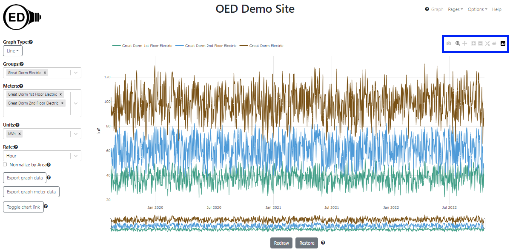
Colors of lines
The color of lines is always the same for a given meter or group. This means everyone sees the same color for a given meter or group whenever it is graphed. The line colors are chosen to try to provide contrast between different lines. They are also designed to give some differentiation between meters and groups when possible. OED tries to show meters in lighter colors and groups in darker colors. This is not guaranteed as colors are reused between groups and meters if the number in either category becomes large. OED also tries to give a unique color to each line but that may not happen when the number of meters and groups is large. Note both of these depend on the number of meters and groups at the OED site and not the number being shown. Finally, a given meter or group will have the same color on all graphics except compare.
When meters/groups have different time ranges of data
If the meters included in a group have data for different times then the group will only represent the data that is available. Suppose the "Great Dorm 1st Floor Electric" meter goes from August 2019 to October 2022 as it does in the examples on most documentation pages. Now suppose the "Great Dorm 2nd Floor Electric" meter had data from July 2020 to August 2023 which is different from the time range on most documentation pages. As seen in the following figure, the lines for these two meters do not span the same time ranges.
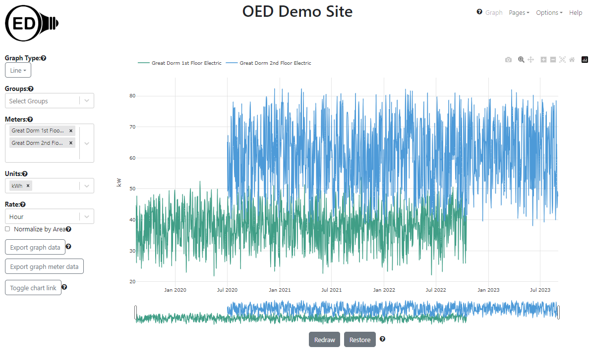
As shown in the next figure, the group "Great Dorm Electric Vary" contains these two meters is graphed.
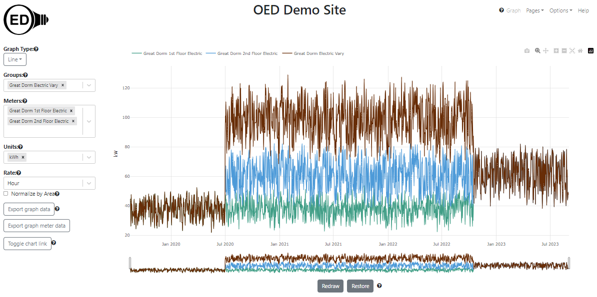
As can be seen, July 2020 to October 2022 shows the group looking as the usual sum of the two meters. However, August 2019 to June 2020 there is only the value of the "Great Dorm 1st Floor Electric" meter so the meter and group lines completely overlap. This occurs because there is no data for the "Great Dorm 2nd Floor Electric" meter so nothing from that meter is included in the aggregation in the group for this time range. A similar situation occurs from November 2022 to August 2023 because the meter "Great Dorm 1st Floor Electric" does not have any values. For efficiency reasons, OED does not detect when meters are missing data when graphing data. This can happen for much briefer periods of time in the middle of the line graphic if the meter does not collect data for a short time frame. The gaps in meter values can sometimes be seen on either the line or bar graphic of that meter. These cases are generally unusual and are being noted for completeness sake.
The time frame (days) shown on the x-axis will be the maximum time for all all meters and groups. If different meters and groups have data for different time ranges then some lines will not span the entire length of the x-axis. This is seen in the figure above.
Why do I need to Redraw and Restore?
OED is designed to be fast on any reasonable device. When one is zooming and scrolling within a line graphic, the work is all done in one's web browser so it will have a very fast response rate. If OED recalculated the points shown as one zoomed/scrolled then it would be substantially slower, esp. if it needed to access the site's server to get new data. OED could try to determine when one is done zooming/scrolling and then recalculate the points but it is very difficult to determine when that has happened given users often pause during these operations. Thus, to be fast and allow one to get high quality line graphs, OED needs one to let it know when one is done and needs the points displayed to be reset. The "Redraw" button is how one does that. One can also tell OED when one wants to go back to the original graphic via the "Restore" button. This allows one to see all the data and/or zoom/scroll to other areas of the graph.
Why doesn't OED show all the meter/group data?
Meters often get a new data point every 15 to 60 minutes and groups either do hour or day points. This means a given meter or group can have a lot of data points. For example, a meter reading every 20 minutes for a year has over 26,000 data points. OED refers to these points as the original meter data. There would be two main issues in showing all the meter data. First, it would be significantly slower. All that data needs to be located in the OED database and then transferred across the network to one's device. If one is on a mobile device one may be paying to transfer the data. Second, one would not be able to see all the points even if OED tried to graph them. Screen resolutions are in the hundreds to thousands of pixels (a single point on the screen) and the line graphics only get a subset of those pixels. That means OED cannot show more than hundreds to a few thousand points (if one has an HD screen). A massive number of points would be lost in viewing. Thus, OED averages the data on the site server to reduce the number of points it sends to one's web browser for graphing. Thus, a point is often the average energy usage across that time. Typically it averages across a day of data to be highly responsive over longer time frames. If one has limited data points for day averages then it will use smaller time intervals between points and will go to the original meter data when the number is small enough. This is still fast since the number of points to get is small and the number transmitted is also small. These details are generally not important except to know that one is often looking at averaged data. Zooming in to a smaller time frame and redrawing or downloading the raw meter data for a graph are ways to see the original meter data.
Format of dates and times
OED uses a software system that tries to properly use one's currently chosen language of display to determine how to display dates and times. For example, in English it would show MM DD, YYYY (e.g., January 1, 2020) whereas in Spanish it would show DD de MM de YYYY (e.g., 1 de enero de 2020). What this means is the date and time format one sees may vary from what is shown in the documentation pages. It should be more appropriate for one's chosen language.